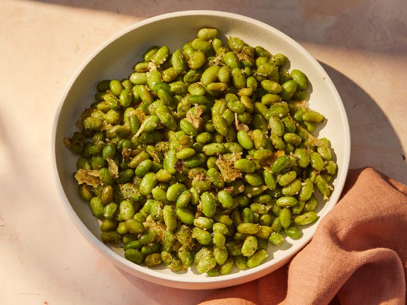

Home
Crispy Edamame

palatable snack bowl of crispy edamame
This edamame recipe roasts the beans with grated vegan Parmesan for an easy, four-ingredient savory snack.
Ingredients:
- 1 (12 ounce) package frozen shelled edamame (green soybeans)
- 1 tablespoon olive oil
- ¼ cup grated vegan Parmesan cheese
- salt and pepper to taste
Steps:
- Gather all ingredients.
- Preheat the oven to 400 degrees F (200 degrees C). Rinse edamame in a colander under cold water to thaw, about 5 minutes. Drain.
- Spread edamame over the bottom of a 9x13-inch baking dish. Drizzle with olive oil, sprinkle with Parmesan, and season with salt and pepper.
- Bake in the preheated oven until cheese is crispy and golden, about 15 minutes.